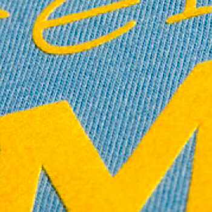
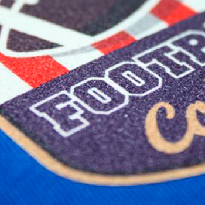

Koszulka z nadrukiem – przegląd technologii termotransferowych
W pierwszej części cyklu „Koszulka z nadrukiem …” krótko opisałem nadruk sublimacyjny oraz nadruk w technologii ChromaBlast. Kolejna bardzo popularna technologia termotransferowa umożliwiająca wykonanie nadruku na tekstyliach to nadruk przy użyciu folii FLEX lub FLOCK w różnych odmianach.
Jak wykonać nadruk na koszulce?
Przegląd technologii termotransferowych
Może w końcu nadszedł czas, aby wyjaśnić pojęcie „termotransfer”. To nic innego jak wykonywanie transferu /przeniesienia np. obrazu/ na dowolny materiał przy użyciu temperatury. Przykładem termotransferu jest nadruk sublimacyjny. Do technologii termotransferowe zalicza się sporo rożnych sposobów personalizowania odzieży i innych gadżetów
Nadruk folią FLEX
Folia FLEX to cienka folia poliuretanowa z aktywowanym termicznie klejem do
aplikacji na tkaniny. Jest to idealny materiał do wykonywania nadruków na
T-shirtach, bluzach, odzieży sportowej, odzieży roboczej, torbach itp.
Występuje w wielu odmianach oraz kolorach z wykończeniem błyszczącym,
satynowym lub matowym. Jest to produkt dwuwarstwowy, składający się z folii
właściwej oraz przezroczystej folii transportowej. Folia FLEX w handlu
występuje w rolkach o szerokości 50 cm i jest przeważnie sprzedawana w
metrach bieżących /mb/.
Nie będę charakteryzował wszystkich rodzajów folii FLEX występujących
na rynku. Zasygnalizuję tylko kilka podstawowych, na które warto zwrócić
uwagę:
- Poli-Flex – najpopularniejsza odmiana folii do aplikacji na tkaniny bawełniane, poliestrowe lub poliestrowo-akrylowe.
- Folia o obniżonej temperaturze aplikacji.
- Flex odporny na temperaturę promieniowanie UV – folia przeznaczona do aplikacji na odzież roboczą, ponieważ można go prać w temperaturze do 80ºC, czyścić chemicznie oraz suszyć w suszarkach.
- Folie ozdobne – metalic, brokat, carbon, z wzorami itp.
- Flex odblaskowy
- Flex do druku solwentowego
- Folie specjalne – blockout, folie perforowane, do aplikacji na odzież sportową, puchnące, itp.
Nadruk folia FLEX to przeważnie jednokolorowy element graficzny lub napis, chociaż folie tą można łączyć ze sobą. Sam wielokrotnie wykonywałem kilkuwarstwowe nadruki, np. trójkolorowe logo na koszulce. Przy użyciu tej technologii można wykonać raczej proste nadruki bez drobnych elementów.
Wzór do nadruku należy wyciąć w odbiciu lustrzanym na ploterze /nóż 45º/ nacinając jedynie folię właściwą, tak aby nie przeciąć folii transportowej, a następnie wybrać niepotrzebne elementy wzoru do nadruku. owierzchni blatu /nigdy nie „w górę”/. Na koniec zaleca się ponowne przygrzanie folii w czasie 3-5 sekund, ma to na celu zabezpieczenie krawędzi wzoru przez odrywaniem.
Przed wykonaniem nadruku nie tylko folią FLEX zawsze wykonuję próbę jak sama folia lub materiał zachowują się pod wpływem działania wysokiej temperatury. Przed aplikacją zawsze prasuje koszulkę w prasie w celu wyrównania powierzchni oraz usunięcia z niej wilgoci. Podczas aplikacji zawsze stosuję papier silikonowy lub papier do pieczenia, aby uniknąć zabrudzenia blatu grzewczego prasy.
Nadruk folią Subli-Flex
Folia Subli-Flex to folia umożliwiająca wykonanie wielokolorowego nadruku na białej folii i aplikację na tekstylia np. ciemna bawełniana koszulkę. Podobnie jak w przypadku folii FLEX składa się z folii właściwej oraz folii transportowej. Jest dostępna w handlu w arkuszach A3 i A4 oraz w rolkach o szerokości 50 cm.
Wzór należy wydrukować tuszem sublimacyjnym w odbiciu lustrzanym na matowej stronie folii. Poczekać do wyschnięcia tuszu, a następnie wyciąć wzór przy pomocy plotera tnącego. Aplikację wykonuje się w temperaturze 180ºC przez 30 sekund z dość dużym naciskiem. Folię transportową usuwa się po całkowitym ostygnięciu folii. Tak wykonana aplikacja jest błyszcząca, ale jest możliwość wykonania aplikacji matowej, w tym celu należy „zmatowić” powierzchnię folii przy użyciu papieru Matte Finish, również w temperaturze 180ºC w czasie 30 sekund pod dużym ciśnieniem.
Nadruk folią FLOCK oraz Subli-Flock
Folia FLOCK oraz Subli-Flock to materiał zbliżony do folii FLEX oraz Subli-Flex, wyróżnia go jedynie powierzchnia oraz grubość. Powierzchnia FLOCK jest pokryta delikatnym meszkiem, a sama folia ma grubość około 0,5 mm. FLOCK występuje w wielu kolorach i można go używać analogicznie jak folii FLEX, z tą różnicą, że nie nadaje się do tworzenia wielowarstwowych nadruków. Na folii Subli-Flex podobnie jak w przypadku Subli-Flex wykonujemy nadruk, wycinamy go na ploterze i aplikujemy na tkaninę. Parametry aplikacji tego materiału są inne niż w przypadku flexów. Najbezpieczniej sprawdzić je na stronie producenta lub dystrybutora. Folia FLOCK oraz Subli-Flock to materiał zbliżony do folii FLEX oraz Subli-Flex, wyróżnia go jedynie powierzchnia oraz grubość. Powierzchnia FLOCK jest pokryta delikatnym meszkiem, a sama folia ma grubość około 0,5 mm. FLOCK występuje w wielu kolorach i można go używać analogicznie jak folii FLEX, z tą różnicą, że nie nadaje się do tworzenia wielowarstwowych nadruków. Na folii Subli-Flex podobnie jak w przypadku Subli-Flex wykonujemy nadruk, wycinamy go na ploterze i aplikujemy na tkaninę. Parametry aplikacji tego materiału są inne niż w przypadku flexów. Najbezpieczniej sprawdzić je na stronie producenta lub dystrybutora. FLOCK występuje w wielu kolorach i można go używać analogicznie jak folii FLEX, z tą różnicą, że nie nadaje się do tworzenia wielowarstwowych nadruków. Na folii Subli-Flex podobnie jak w przypadku Subli-Flex wykonujemy nadruk, wycinamy go na ploterze i aplikujemy na tkaninę. Parametry aplikacji tego materiału są inne niż w przypadku flexów. Najbezpieczniej sprawdzić je na stronie producenta lub dystrybutora. Folia FLOCK oraz Subli-Flock to materiał zbliżony do folii FLEX oraz Subli-Flex, wyróżnia go jedynie powierzchnia oraz grubość. Powierzchnia FLOCK jest pokryta delikatnym meszkiem, a sama folia ma grubość około 0,5 mm.
 Myślę, że udało mi się przybliżyć Wam kolejne zagadnienia związane z wykonywaniem nadruków na koszulkach i innych tekstyliach. W kolejnej części przedstawię ciekawą alternatywą dla folii FLEX 🙂 Zapraszam.„Jak co roku w Chałupach, gdy zaczyna się upał …” powraca temat wykonywania nadruku na koszulkach. T-shirt z nadrukiem to od wielu lat jeden z najpopularniejszych gadżetów z nadrukiem. W okresie wakacyjnym znacznie wzrasta zapotrzebowanie na oryginalne i niepowtarzalne koszulki. Noszą je zarówno kobiety, jak i mężczyźni, a nierzadko pomysłowi rodzice, koszulki z indywidualnym nadrukiem zakładają swoim dzieciom. Co umieszczamy na takich koszulkach? Możliwości jest wiele: fotografię idola, postać z ulubionej bajki, patriotyczna grafikę, śmieszny tekst lub humorystyczne elementy graficzne, itp.To doskonały wybór na wykonanie nadruku na koszulce pod warunkiem, że jest ona biała i wykonana tkaniny poliestrowej lub zawierającej w swoim składzie minimum 50% poliestru. Nadruk na koszulce wykonany w technologii sublimacji nie ma ograniczeń w ilości kolorów, może posiadać przejścia tonalne, a przy tym jest niewyczuwalny i odporny na pranie. Wzór należy wydrukować w lustrzanym odbiciu na papierze sublimacyjnym, przy użyciu standardowego tuszu sublimacyjnego i przenosi na koszulkę w prasie płaskiej w temperaturze ok. 180° C w czasie 90-120 sekund z dość dużym naciskiem. Przed wykonaniem nadruku należy przeprasować koszulkę, aby odparować z niej wilgoć i wyrównać powierzchnie pod nadruk. Podczas wykonywania nadruku warto przykleić wzór, ponieważ często podczas otwierania prasy może dojść do jego przesunięcia i zduplikowania obrazu tzw. efekt ghosting. Myślę, że udało mi się przybliżyć Wam kolejne zagadnienia związane z wykonywaniem nadruków na koszulkach i innych tekstyliach. W kolejnej części przedstawię ciekawą alternatywą dla folii FLEX 🙂 Zapraszam.„Jak co roku w Chałupach, gdy zaczyna się upał …” powraca temat wykonywania nadruku na koszulkach. T-shirt z nadrukiem to od wielu lat jeden z najpopularniejszych gadżetów z nadrukiem. W okresie wakacyjnym znacznie wzrasta zapotrzebowanie na oryginalne i niepowtarzalne koszulki. Noszą je zarówno kobiety, jak i mężczyźni, a nierzadko pomysłowi rodzice, koszulki z indywidualnym nadrukiem zakładają swoim dzieciom. Co umieszczamy na takich koszulkach? Możliwości jest wiele: fotografię idola, postać z ulubionej bajki, patriotyczna grafikę, śmieszny tekst lub humorystyczne elementy graficzne, itp.To doskonały wybór na wykonanie nadruku na koszulce pod warunkiem, że jest ona biała i wykonana tkaniny poliestrowej lub zawierającej w swoim składzie minimum 50% poliestru. Nadruk na koszulce wykonany w technologii sublimacji nie ma ograniczeń w ilości kolorów, może posiadać przejścia tonalne, a przy tym jest niewyczuwalny i odporny na pranie. Wzór należy wydrukować w lustrzanym odbiciu na papierze sublimacyjnym, przy użyciu standardowego tuszu sublimacyjnego i przenosi na koszulkę w prasie płaskiej w temperaturze ok. 180° C w czasie 90-120 sekund z dość dużym naciskiem. Przed wykonaniem nadruku należy przeprasować koszulkę, aby odparować z niej wilgoć i wyrównać powierzchnie pod nadruk. Podczas wykonywania nadruku warto przykleić wzór, ponieważ często podczas otwierania prasy może dojść do jego przesunięcia i zduplikowania obrazu tzw. efekt ghosting.